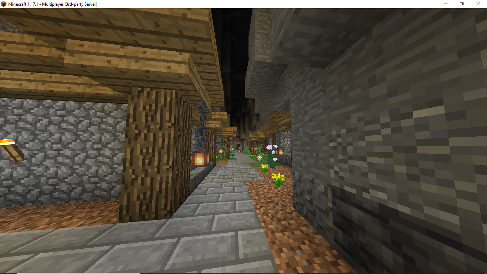
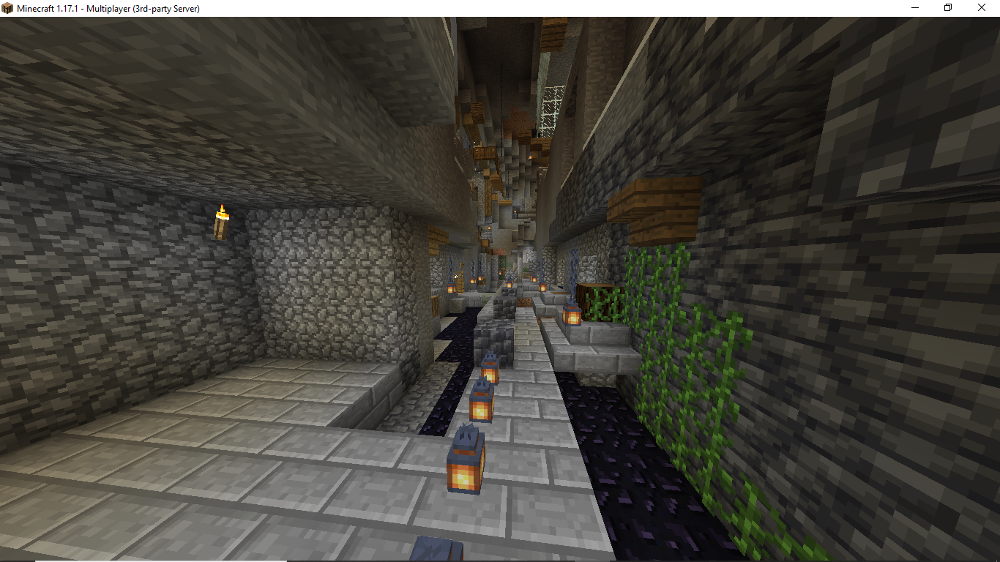

The garden, located near the entrance to Liminal Africa.
.png)
Liminal Africa
Liminal Africa was established shortly before the Wpwapian Renaissance, but still played a key role in determining the members of the Third Wpwapian Congress, and was comprised of all former members of Wpwap (with the exception of Rosha). After most of the base had been built, a plot was formed to hide and destroy Max's portion of Liminal Africa, which had not yet been completely finished. This resulted in Max leaking the base coordinates, and the base being destroyed within minutes.
The garden, located near the entrance to Liminal Africa.
A view of the garden facing towards the street.
.png)
The entrance to the garden.
.png)
The balcony of Jackie and Evelyn's house, overlooking the street below.
.png)
Jackie and Evelyn's house (exterior).
.png)
A view of the ravine, facing towards the entrance.
.png)
View of uptown Liminal Africa.
Entrance to "The Slums" of Liminal Africa, where Nate and Jacob resided.
The flag of Liminal Africa.
Soco standing in front of Rosha's house.
Bobra26 spending time in the newly established Prison of Liminal Africa, after being arrested for committing a terrorist attack.
A false alarm is raised after Rosha mistakenly identifies a 4x stacked Creeper as another player.

Statue of Liminal Africa, with the garden and uptown visible in the background, along with the bell.
Where Jevelyn (Jackie and Evelyn's dog) was slaughtered (Not to be confused with Nate's stack of multiple dogs).
.png)
Uptown, after being griefed.
.png)
Jacob and Nate's house, after being griefed.
Rosha's house, after the griefing occured.
.png)
More photos of the griefing.
Max explaining the events which unfolded as the base was being griefed.
Jackie, travelling the Nether in search of a new base location.
A glass cube which had been erected at the short lived successor of Liminal Africa, which had not been named.